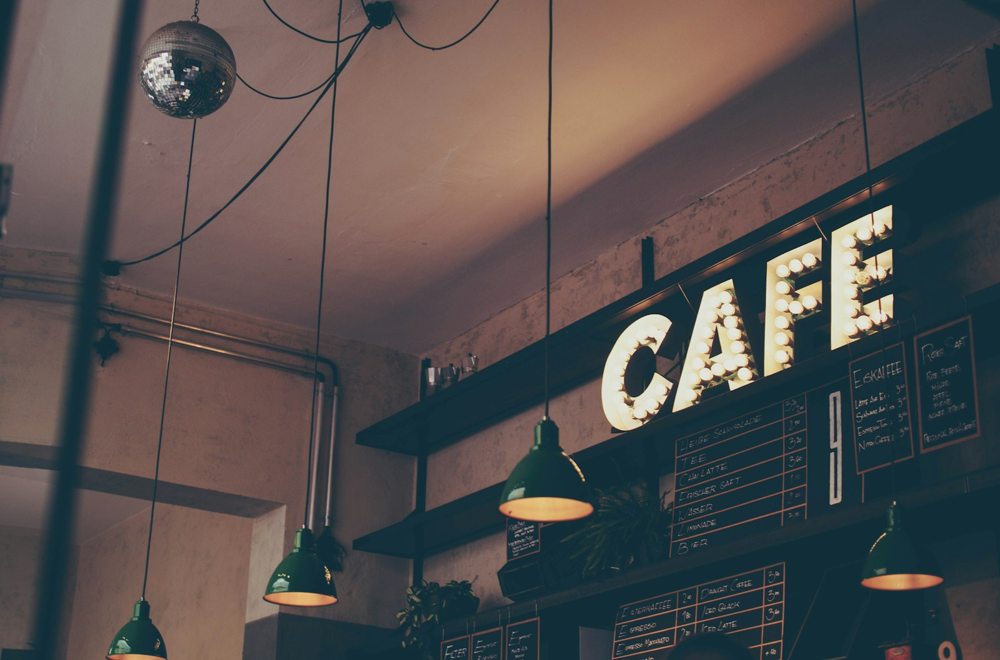
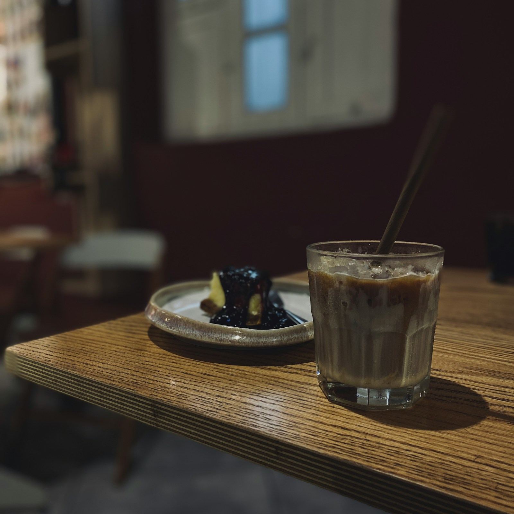
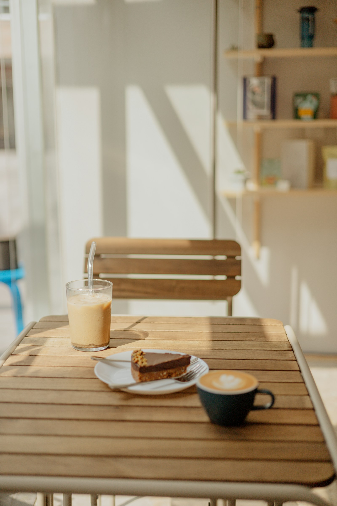

南大沢駅から歩いて6分。深煎り珈琲と店内で焼くお菓子をご用意しています。
ひとりで本を読みたい日も、友人と話したい日も、気軽に立ち寄れる店を目指しています。席はテーブルとカウンターを合わせて18席です。
珈琲はご注文ごとにハンドドリップで淹れます。季節の果物を使った焼き菓子も、店内で少しずつ作っています。


価格はすべて税込です。
香ばしさが残る深煎りのブレンドです。
旬の果物を使い、店内で焼いています。
発酵バターと自家製ジャムを添えます。
深煎り珈琲に温かいミルクを合わせます。
卵の味を生かした昔ながらのプリンです。
茶葉は月ごとに替わります。
この店舗はデザイン確認用の架空店舗です。